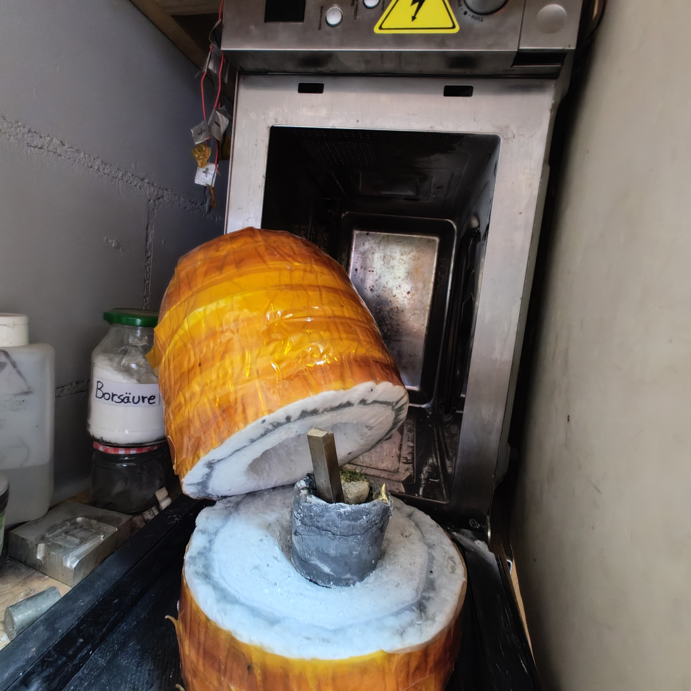

Student der Mechatronik und Informationstechnik am KIT. Dokumentation ausgewählter Eigenbauprojekte
an der Schnittstelle aus Mechanik, Fertigungstechnik, Embedded Systems und Software.
Zwei synchronisierte E-Ink-Rahmen als geteilte Zeichenfläche und Brettspiel-Portal –
inklusive integriertem Zahnstangen-Stiftmechanismus im Walnussgehäuse.
E-InkCAD / 3D-DruckNetworking
Projektdokumentation →

Fertigung & Guss
Mikrowellen-Metallschmelze & Feinguss
Schmelzen von Aluminium und Messing in einer 900-W-Mikrowelle mittels SiC-Suszeptor –
kombiniert mit Ölsand-, Vakuum- und Lost-PLA-Guss für Funktionsbauteile.
Lost-PLASiC-TiegelVakuumguss
Projektdokumentation →
Kinematik & Steuerung
Polargraph – Wandmontierter Seilplotter
Großformatiger Vektor- und Linienplotter mit zwei NEMA-17-Schrittmotoren,
3D-gedrucktem Stiftschlitten und Arduino-Steuerung für generative Zeichnungen.
 Kinematik & Steuerung
Kinematik & Steuerung